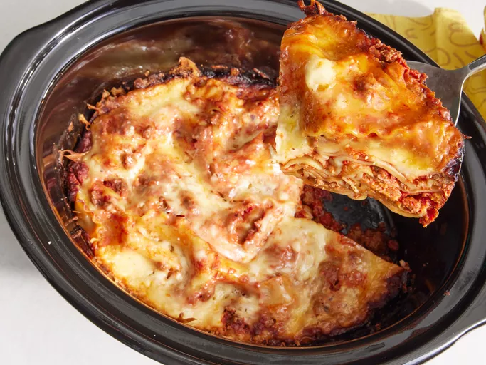

World's Best Lasagna

The Allrecipes community adores this lasagna recipe because it's incredibly customizable, so you can easily alter the ingredient list to suit your needs. If you want to stay true to the original recipe, though, these are the ingredients you'll need to add to your grocery list:
- Meat
- Onion and Garlic
- Tomato Products
- Sugar
- Spices and Seasonings
- Lasagna Noodles
- Cheeses
- Egg
Steps
- Make the meat sauce.
- Cook the noodles.
- Make the ricotta mixture.
- Layer the lasagna according to the recipe instructions.
- Cover with foil and bake.
- Let the lasagna rest before serving.
Homemade Lasagna

These are the ingredients you'll need to make this top-rated homemade lasagna recipe:
- Meat
- Onion
- Canned Tomatoes
- Fresh Herbs
- Sugar
- Spices and Seasonings
- Noodles
- Cheese
- Eggs
Steps
- Combine pork and ground beef in a large, deep skillet over medium-high heat; cook and stir until browned and crumbly, 5 to 7 minutes. Add onion and cook until translucent, about 5 minutes.
- Stir in crushed tomatoes, tomato sauce, 1 tablespoon fresh parsley, garlic, basil, salt, oregano, and sugar. Reduce heat to medium-low and simmer, stirring occasionally, for 30 minutes.
- While the sauce is simmering, bring a large pot of lightly salted water to a boil. Cook lasagna noodles in the boiling water, stirring occasionally, until tender yet firm to the bite, 8 to 10 minutes. Drain and set aside.
- While the noodles are cooking, preheat the oven to 375 degrees F (190 degrees C).
- Mix cottage cheese, Parmesan cheese, eggs, remaining 1 tablespoon fresh parsley, salt, and pepper in a large bowl until combined.
- Assemble lasagna: Spread a spoon or two of sauce over the bottom of a 9x13-inch baking dish just to to coat it. Place two layers of noodles over the sauce to cover. Layer with 1/2 of the cheese mixture, 1/2 of the remaining sauce, and 1/2 of the mozzarella cheese. Repeat layers once more using the remaining noodles, cheese mixture, sauce, and mozzarella. Cover the baking dish with aluminum foil.
- Bake in the preheated oven for 30 to 40 minutes. Remove the foil and bake until cheese is golden brown, 5 to 10 more minutes.
- Remove from the oven and let stand for 10 minutes before cutting and serving.
Slow Cooker Lasagna

This crockpot lasagna recipe is so easy, you might think that you missed something. It is a delicious slow cooker meal!
- 1 pound lean ground beef
- 1 medium onion, chopped
- 2 teaspoons minced garlic
- 1 (29 ounce) can tomato sauce
- 1 (6 ounce) can tomato paste
- 1 ½ teaspoons salt
- 1 teaspoon dried oregano
- 16 ounces shredded mozzarella cheese
- 12 ounces cottage cheese
- 1 (12 ounce) package lasagna noodles
- ½ cup grated Parmesan cheese
Steps
- Gather all ingredients.
- Cook ground beef, onion, and garlic in a large skillet over medium heat until the meat is browned.
- Add tomato sauce, tomato paste, salt, and oregano and stir until well combined and heated through.
- Stir mozzarella, cottage cheese, and Parmesan together in a large bowl.
- Spoon a layer of the meat mixture onto the bottom of a slow cooker.
- Add a double layer of uncooked lasagna noodles, breaking noodles to fit into cooker as needed.
- Top noodles with a portion of cheese mixture.
- Repeat the layering of sauce, noodles, and cheese until all the ingredients are used.
- Cover and cook on Low until lasagna noodles are tender, about 4 to 6 hours.